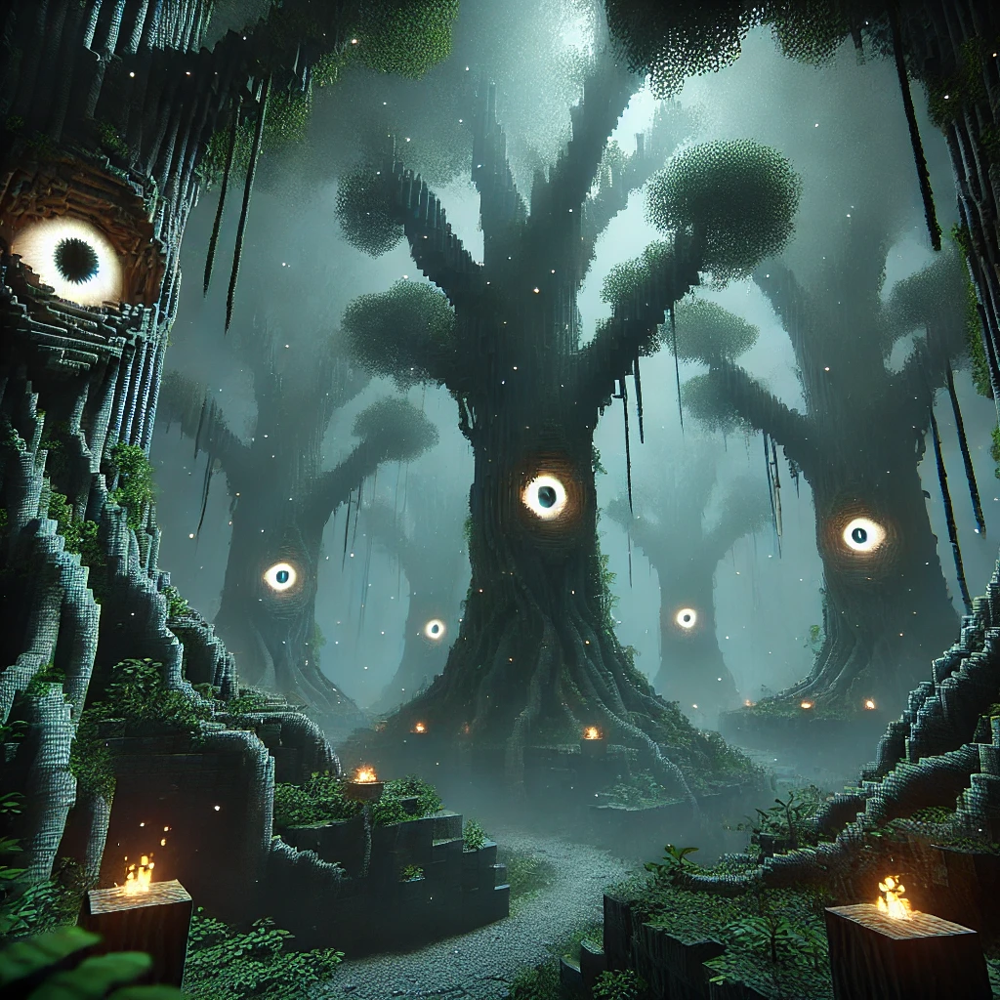

Neue Minecraft-Entdeckung: Der "Flüsternde Wald"
MINECRAFT COMMUNITY IN AUFRUHR: Seltsamer, neuer Mythos erschüttert Spieler weltweit.
Eine beunruhigende neue Entdeckung verbreitet sich wie ein Lauffeuer unter Minecraft-Spielern. Der „Flüsternde Wald“ – ein angeblicher, mysteriöser Biomtyp – soll in den letzten Minecraft-Updates immer wieder unerwartet auftauchen, obwohl es in den Patchnotes keine Erwähnung dazu gibt. Spieler berichten, dass sie beim Erkunden dunkler Wälder gelegentlich seltsame Geräusche hören, die wie Flüstern klingen. Manche behaupten, das Flüstern würde sie zu verborgenen Strukturen führen, andere schwören, es sei ein Vorzeichen für baldige Angriffe durch besonders starke Mobs.
Was steckt dahinter?
Laut Berichten in Foren und auf YouTube-Videos haben Spieler weltweit versucht, das Phänomen aufzunehmen, doch in den meisten Fällen enden ihre Aufzeichnungen plötzlich, als ob das Spiel selbst eingreifen würde. Einige behaupten, in der Nähe von Baumstrukturen riesige Augen gesehen zu haben, die sie verfolgen, sobald das Flüstern lauter wird. Manche glauben, es handelt sich um eine Art Geisterbiom, das seit der Alpha-Version im Code versteckt ist.
Eine geheime Botschaft?
Einige besonders hartnäckige Forscher haben herausgefunden, dass das Flüstern in Morsecode verschlüsselt sein könnte. Das einzige bisher entschlüsselte Wort lautet angeblich „Entkommen“.
Ist es ein verstecktes Feature oder nur ein gut gemachter Scherz der Community? Mojang hat bisher keine Stellungnahme zu dem Phänomen abgegeben, was die Gerüchteküche nur weiter anheizt.